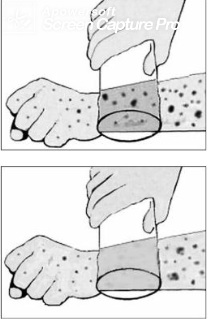

Questão 1 · Lesões vasculares · 4000166195A digitopressão e a vitropressão são utilizadas para diferenciar
A placa de mancha.
B mancha de eritema.
C eritema de púrpura.
D púrpura de pápula.
E pápula de placa.
Questão 2 · Lesões vasculares · 4000141545Considerando a morfologia dos exantemas, assinale a alternativa que apresenta as lesões compatíveis com a descrição apresentada a seguir. São exantemas caracterizados por pequenas lesões puntiformes de coloração vermelha, por extravasamento de sangue, que não desaparecem à digitopressão. GUSSO, G. (Org.); LOPES, J. M. C. (Org.); DIAS, L. C. Tratado de Medicina de Família e Comunidade: princípios, formação e prática. 2a. ed. Porto Alegre: Artmed, 2019.
A Exantemas maculopapulosos.
B Exantemas eritrodérmicos.
C Exantemas urticariformes.
D Exantemas petequiais ou purpúricos.
E Exantemas vesicobolhosos.
Questão 3 · Lesões elevadas · 4000054594Lesões elementares em dermatologia são fundamentais para o raciocínio clínico. São definidas como padrões de alteração no tegumento cujo reconhecimento possibilita a construção de hipóteses diagnósticas. Com base nos conhecimentos deste tema assinale a alternativa que melhor define a lesão elementar PÁPULA:
A Elevação circunscrita de até 1 cm de tamanho, contendo líquido claro no seu interior.
B Pequena ulceração em mucosa.
C Cicatriz fina, pregueada, papiracea.
D Lesão sólida, circunscrita, elevada, de consistência dura.
E Elevação circunscrita de até 1 cm de tamanho, contendo pus no seu interior.
Questão 4 · Epiderme · Derme · 4000124494Assinale a alternativa INCORRETA.
A A contração dos músculos eretores dos pelos causa ereção dos pelos deixando a pele arrepiada.
B A pele é o maior órgão do corpo - é formada pela epiderme, uma camada celular superficial, e pela derme, uma camada profunda de tecido conjuntivo.
C A epiderme é uma camada densa de fibras colágenas e elásticas entrelaçadas, que proporcionam o tônus cutâneo e são responsáveis pela resistência pela firmeza da pele.
D A tela subcutânea está situada entre a derme e a fáscia muscular; é formada por tecido conjuntivo frouxo e depósito de gordura; contém vasos sanguíneos, linfáticos e nervos cutâneos.
Questão 5 · Lesões elementares · 4000083781Os elementos eruptivos ou lesões elementares representam os diversos tipos de lesões cutâneas. Quanto a isso, enumere a COLUNA II de acordo com a COLUNA I, correlacionando o elemento eruptivo citado à descrição que permite caracterizá-lo. COLUNA I: 1. VESÍCULA; 2. ESCAMA; 3. EROSÃO; 4. MANCHA; 5. GOMA. COLUNA II: ( ) Comprometimento superficial da pele com perda somente da epiderme; ( ) Elemento eruptivo indicativo de alteração de cor da pele, sem relevo ou depressão da pele; ( ) Representa o desprendimento das células epiteliais da camada córnea completamente queratinizadas; ( ) Nódulo ou nodosidade da pele que se liquefaz na porção central, podendo posteriormente drenar material necrótico e ulcerar; ( ) Elemento eruptivo de conteúdo líquido presente na fase aguda dos eczemas. Assinale a sequência correta
A 3, 4, 5, 2, 1
B 3, 4, 2, 5, 1
C 1, 4, 2, 5, 3
D 3, 4, 2, 1, 5
E 2, 4, 3, 5, 1
Questão 6 · Lesões elementares · 4000022151A pele é maior órgão do corpo humano, correspondendo a 15% do peso corporal. É composta por três camadas conectadas estrutural e funcionalmente. Existem mais de duas mil lesões que afetam a pele, as quais podem ser exclusivamente cutâneas ou fazer parte de doenças sistêmicas. Com base em seus conhecimentos sobre as lesões de pele, todas as afirmativas são corretas, EXCETO:
A As lesões elementares podem ser primárias ou secundárias;
B A distribuição das lesões pode ter grande valor na diferenciação entre dois diagnósticos;
C As lesões secundárias surgem sobre uma lesão primária ou podem representar sua evolução;
D Quando a dermatose compromete mais de 90% da superfície cutânea, é chamada de universal;
Questão 7 · Lesões vasculares · 4000083155Qual a afirmativa correta, com relação às púrpuras e petéquias:
A As lesões desaparecem sob compressão.
B Ocorrem devido a vasodilatação localizada.
C As púrpuras são menores do que as petéquias.
D Ocorrem quando há extravasamento de hemácias na derme.
E O local inicial de apresentação das petequias induzidas por trombocitopenia é a porção distal dos membros superiores.
Questão 8 · Lesões elementares · 4000024341Doenças exantemáticas são corriqueiras na prática pediátrica e saber interpretá-las é fundamental. Assim, o que são máculas?
A Lesões planas, elevadas, grandes e palpáveis.
B Lesões pequenas, sólidas e perceptíveis ao tato.
C Lesões planas, não palpáveis e bem delimitadas.
D Lesões pequenas, elevadas e com conteúdo líquido.
Questão 9 · Lesões vasculares · 4000119795Um garoto previamente saudável, com cinco anos de idade, apresentou subitamente um "vermelhão", reconhecidos pela mãe como mancha com pontos vermelhos. No seu domicílio, a mãe realiza o teste de Tumbler, também conhecido como teste do copo, com resultado positivo. Preocupada, procura o PSI para atendimento. No PSI, nega febre, IVAS, perda de peso, dor óssea, diarreia, sangramento intestinal e não fez uso de medicação. Refere que há 21 dias esteve com um quadro respiratório superior semelhante a um resfriado, que foi autolimitado em 48 horas, e não procurou assistência médica. Ao exame físico, encontrava-se ativo, reativo, sorridente e observou-se lesões iguais às descritas pela mãe, confirmando a suspeita dela. (Conforme imagem ) Sobre esse teste, é CORRETO afirmar que é usado para diagnóstico dos rash:

A Maculares.
B Papulares.
C Maculopapulares.
D Petequiais.
E Vesiculares.
Questão 10 · Dermatologia · 4000119349Assinale a alternativa INCORETA.
A A epiderme é uma camada densa de fibras colágenas e elásticas entrelaçadas que proporcionam o tônus cutâneo e são responsáveis pela resistência e firmeza da pele.
B A contração dos músculos eretores dos pelos causa ereção dos pelos, deixando a pele arrepiada.
C A pele é o maior órgão do corpo, formada pela epiderme, derme e uma camada profunda de tecido conjuntivo.
D A tela subcutânea está situada entre a derme e a fáscia muscular, e é formada por tecido conjuntivo frouxo e depósito de gordura, contém glândulas sudoríferas, vasos sanguíneos, linfáticos e nervos cutâneos.
Questão 11 · Lesões elevadas · Lesões preenchidas pro líquido · Lesões plana · 4000096781Dermatoses são lacerações determinadas por processos inflamatórios, infecciosos ou não, degenerativos, circulatórios, neoplásicos benignos ou malignos, metabólicos, de natureza congênita ou hereditária.Numere a COLUNA II de acordo com a COLUNA I, relacionando cada conceito da linguagem dermatopatológica à lesão elementar de pele. COLUNA I Lesão elementar de pele, 1. Máculas; 2. Pápula; 3. Vesícula; 4. Pústula COLUNA II Conceito ( ) Lesão sólida e circunscrita, menor que 1 cm de diâmetro e elevada; ( ) Pequena cavidade de localização geralmente intraepidérmica, elevada, de conteúdo claro e circunscrita; ( ) Elevação circunscrita da epiderme e conteúdo purulento; ( ) Modificação de coloração da pele sem alteração de relevo ou consistência. Assinale a sequência CORRETA:
A 2 3 4 1.
B 2 1 3 4.
C 3 4 2 1.
D 1 4 3 2.
E Nenhuma das alternativas acima.
Questão 12 · Lesões elevadas · Lesões deprimida · 4000051740Sobre as definições de termos das lesões elementares em dermatologia, relacione. (I) Liquenificação. (II) Atrofia. (III) Placa. (IV) Nódulo. (V) Urticária. (A) Lesão sólida, elevada, formada por agrupamento de pápulas. (B) Lesão sólida, sob pele de aspecto normal, detectável à palpação. (C) Lesão sólida, elevada, consequente a prurido crônico. (D) Lesão eritematosa, pruriginosa, que regride espontaneamente. (E) Lesão decorrente de diminuição de espessura da pele. Assinale a alternativa que contém a associação CORRETA:
A I-A, II-C, III-D, IV-E, V-B.
B I-A, II-E, III-C, IV-B, V-D.
C I-C, II-D, III-B, IV-E, V-A.
D I-C, II-E, III-A, IV-B, V-D.
E I-E, II-C, III-B, IV-D, V-A.
Questão 13 · Dermatologia · 4000005346As lesões elementares fazem parte da semiologia médica da pele e anexos e são fundamentais para elaboração das hipóteses diagnósticas clínicas na dermatologia. Todas as lesões elementares descritas estão seguidas de suas respectivas doenças corretamente, EXCETO:
A Abscesso quente - tuberculose.
B Tubérculo - sarcoidose.
C Goma - sífilis.
D Vegetação - Blastomicose.
E Infiltração - Hanseníase Virchowiana.
Questão 14 · Eczema numular · Lesões elementares · 4000070356Qual é o termo usado em dermatologia para descrever uma lesão em formato de moeda?
A Herpetiforme.
B Lichenóide.
C Morbiliforme.
D Numular.
E Policíclica .
Questão 15 · Lesões vasculares · Lesões preenchidas pro líquido · 4000081021Na descrição de exame dermatológico, um interno relata área cutânea puntiforme, avermelhada, que não desaparece à digitopressão e outra lesão, com 0,4 cm de diâmetro, contendo líquido de aspecto límpido no seu interior. Você melhor caracterizaria estas descrições, respectivamente, como:
A Petéquia e bolha.
B Petéquia e vesícula.
C Equimose e vesícula.
D Rash e pústula.
E Pápula e bolha.
Questão 16 · Lesões elementares · 4000031311Nas doenças dermatológicas, a identi cação correta das lesões elementares é essencial. Sobre essas lesões é correto afirmar, EXCETO:
A Enantema é caracterizado por mancha vermelha, eritematosa localizada em mucosas.
B Eritema é caracterizado por coloração avermelhada da pele que desaparece à digitopressão.
C Eritrodermia é caracterizada por manchas avermelhadas eritematosas, acompanhadas de descamação, restritas à pele da região da cabeça e do pescoço.
D Exantema é caracterizado por manchas na pele avermelhadas, eritematosas, que surgem de forma aguda e têm duração curta.
Questão 17 · Lesões elementares · 4000011725Em relação às lesões de pele, assinale a alternativa correta: Respostas: 1 12
A A coloração das lesões, a localização, seu arranjo e número são fundamentais para o estabelecimento da etiologia. Na dermatite atópica as lesões são eritematosas, enquanto que a foliculite aparece como pequenas pápulas em áreas cobertas (glúteos e abdome).
B A aparência morfológica das lesões, sua localização, seu arranjo e número são fundamentais para o estabelecimento da etiologia. Na dermatite de contato aparecem vesículas maiores de 1 cm com conteúdo seroso, enquanto que na urticária as lesões são lineares.
C A aparência morfológica das lesões, sua localização, seu arranjo e número são fundamentais para o estabelecimento da etiologia. Na psoríase as lesões são coalescentes e localizadas nos membros, enquanto que a ceratose actínica aparece nas áreas expostas ao sol.
D A coloração das lesões, a localização, seu arranjo e número são fundamentais para o estabelecimento da etiologia. Nos xantomas as lesões são bolhas com conteúdo branco, enquanto que o Herpes-zóster se manifesta por pústulas coalescentes.
E A aparência morfológica das lesões, sua localização, seu arranjo e número são fundamentais para o estabelecimento da etiologia. O carcinoma basocelular aparece como lesão papuloescamosa, enquanto que o vitiligo apresenta placas hipocrômicas.